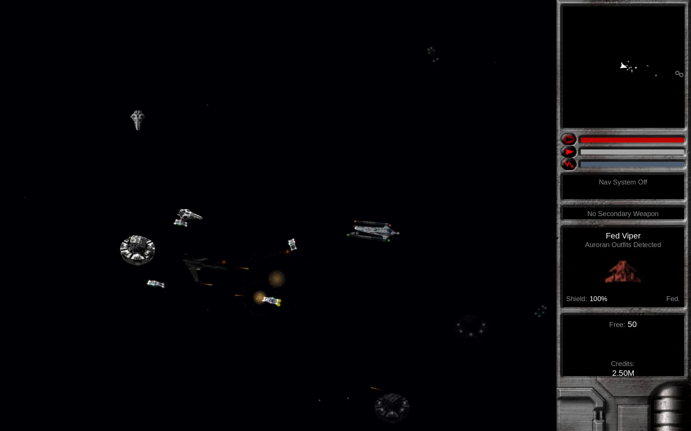

NOVA Swift is a free, open-source reimplementation of the 2002 game EV Nova. It is a game engine, not the game itself: it runs the data from your own copy of EV Nova. No game data ships with it.
Download
Pick the version for your device.
| Device | What to get | Status |
|---|---|---|
| Mac, iPhone, iPad, Apple TV | The native Swift app, through TestFlight | Beta. Recommended on Mac. |
| Linux (x86_64) and Steam Deck | NovaSwift-linux-x86_64.tar.gz from GitHub Releases (currently v0.7.0-beta.2) | Beta. See the Steam Deck & Linux guide. |
| Windows 10/11 (x86_64) | NovaSwift-windows-x86_64.zip from GitHub Releases (currently v0.7.0-beta.2) | Beta. Not code-signed: see the Windows steps below. |
| Mac (alternative) | NovaSwift-macos-arm64.zip from the same Releases page | Test build only, untested. Use the TestFlight app instead. |
Install TestFlight
Get Apple's free TestFlight app from the App Store on the device you want to play on.
Join the beta
Open the invitation link and install NOVA Swift. The same link covers Mac, iPad, iPhone and Apple TV.
Launch and follow the setup wizard
On first launch the Data Setup wizard asks for your EV Nova data. See the next section.
Apple TV needs a game controller. The Siri Remote cannot fly a ship. See Controls & controllers.
Download the tarball
Open the Releases page and download
NovaSwift-linux-x86_64.tar.gzfrom the newest release (v0.7.0-beta.2).Extract and run
Extract it anywhere, for example
~/Games/NovaSwift, then runNovaSwift.sh.Import your data
The Data Setup wizard opens first. See the next section.
Download the zip
Open the Releases page and download
NovaSwift-windows-x86_64.zipfrom the newest release (v0.7.0-beta.2).Extract and run
Right-click the zip, choose Extract All, and put the folder anywhere, for example
Documents\NovaSwift. RunNovaSwift.exefrom the extracted folder, not from inside the zip.Get past SmartScreen
The build is not code-signed yet, so Windows may say it protected your PC. Choose More info, then Run anyway. You only need to do this once.
Import your data
The Data Setup wizard opens first. See the next section.
Get and import your EV Nova data
NOVA Swift uses a bring-your-own-data model. EV Nova's data is copyrighted, so we cannot include it. Owning EV Nova is fine; passing its data files around is not. The game only reads your files and never changes the originals.
Where to find the data
EV Nova is no longer sold in any store. Ambrosia Software is gone, and the game was never on Steam, GOG or the App Store. If you own a copy, there are two common ways to get at the data:
- Easiest: download the Windows build's
.zipfrom andrews05.github.io/evstuff and unzip it. You do not need to install, launch or register anything. The unzipped folder already contains the game's.rezdata files, ready to import. - From a Mac install: the community "EV Nova mod 4" build runs on current macOS. Launch it once and its
Nova Filesfolder is ready to import. The Data Setup wizard also explains Decoder Ring, a 2023 tool from Ambrosia's former president Andrew Welch that makes a valid registration code for a copy you own. Registration is only needed to run the classic app, not to import data.
What you can import
The wizard accepts any of these:
- The unzipped Windows folder, or your EV Nova application folder
- The
Nova Filesfolder - Single
.rezor.ndatfiles (.ndatis the cross-platform form of the Mac resource files) - On the Linux and Steam Deck build, the Windows
.zipas it is, with no unzipping
Picking the whole game folder is best, because it also brings the soundtrack and the original fonts. On the Linux and Steam Deck build it also brings the race movies and EVNova.ini, and a Nova Plug-ins folder beside the game is imported as plug-ins.
Start the app
On first launch, the Data Setup wizard appears. On the Linux and Steam Deck build it is the only thing the game shows until your data is imported, plus Settings and Quit.
Choose your data
Tell the wizard whether you already have the files. On Apple devices, tap or click Choose Data… and pick the folder or files. On Linux, pick the folder,
.zipor files; installs the game finds by itself are listed on the page.Wait for the copy
NOVA Swift copies and checks your data. The Linux and Steam Deck wizard confirms the data tables and menu art are readable, shows the detected version, checks free disk space, and only replaces older data once the new copy passes.
Play
When the wizard says it is done, choose Play.
Where your data goes
The wizard copies your files into NOVA Swift's own data folder, so your originals are never touched and app updates never touch the copy.
| Platform | Data folder |
|---|---|
| Linux and Steam Deck | ~/.local/share/NovaSwift/data |
| Windows | %APPDATA%\NovaSwift\data |
| macOS (Godot build) | ~/Library/Application Support/NovaSwift/data |
The Apple app keeps its own copy inside its sandbox, so there is nothing to manage by hand.
Change your data later. On the Linux and Steam Deck build, go to Settings, then Data & Advanced, then Re-import / Change Game Data….
Apple TV
Apple TV has no Files app, so it cannot browse your computer. There are two routes:
- iCloud: if you imported on another Apple device with iCloud on, Apple TV restores your data automatically on first launch.
- Web importer: otherwise the setup wizard shows an address like
http://<your-tv's-ip>:8017. Open it in a browser on a Mac, PC or phone on the same Wi-Fi, then drop yourNova Filesfolder (or the.ndat/.rezfiles in it) onto the page. Nothing leaves your local network.
tvOS may clear local storage when the TV runs low on space. If that happens, restore from iCloud or send the files again the same way.
Create or import a pilot
Choose New Pilot from the main menu, type a name and pick a starting scenario. The scenarios come from your own game data, just like the original game's character setup, and total conversion plug-ins can add their own. On the Linux and Steam Deck build the dice button beside the name field fills in a random name, handy with a controller.
Importing old pilots
- Windows pilots (
.plt): import them from the pilot list. NOVA Swift shows a summary first, then saves the pilot and lets you play it. On the Linux and Steam Deck build use Import EV Nova Pilot… in the Open Pilot screen. - Classic Mac pilots: support is in testing. It may not work for every file yet.
Pilots are saved as .evpilot files with rotating backups. On Linux and Steam Deck they default to ~/Documents/NovaSwift/Pilots (the folder can be changed in Settings, Data & Advanced, Saved Games).
iCloud sync (Apple devices)
On Mac, iPad and iPhone, pilots can save to your private iCloud. Your imported game data can sync the same way, so you import once and every device, Apple TV included, sets itself up. Turn these on or off in Settings under Saved Games (iCloud pilot sync and iCloud game data sync).
Everything goes to your own private iCloud, never anywhere shared. If sync is unavailable (offline, signed out, out of space) you get a friendly message and play continues locally. Game-data sync is still being finished in this beta, so if your data does not appear on a second device, import it there directly.
Enhancements
NOVA Swift plays like the original by default, with the original interface drawn from your own data. Anything that changes the rules is an Enhancement in Settings.
- Enhancements. Extra behaviour the original did not have, each with a one-line note saying what it replaces. Examples are frequent autosave, quick hyperjump, forgiving landing, automatic route plotting, nearest-first targeting, tight formations and a modern key layout. Every one is off by default, so the game plays as the original did unless you opt in.
Game speed is separate. Authentic is the default and matches the original's pace.
Your first flight
If you played EV Nova, you already know how this goes. If not, here is the loop.
Take off
You start docked on a planet. Choose Launch from the spaceport screen. The first time you play, short tutorial hints appear. You can switch them off or bring them all back in Gameplay settings.
Fly
Turn, thrust and fire with the keyboard, a controller or the on-screen touch controls. Defaults are in Controls & controllers.
Land
Select a planet or station and press the Land key (L by default) while you are close and slow enough.
Trade
The spaceport has a commodity exchange. Buy cargo where it is cheap, fly to a system where it sells for more, and sell. This is how most new pilots earn their first credits.
Take missions
The Mission BBS lists jobs offered on the planet. Accept one, then check Mission Info (I by default) for your current objectives. The in-game Story Guide can show where storylines continue.
Upgrade
Use the outfitter for weapons and equipment, and the shipyard for new ships. The shipyard also has a ship info screen.
Jump
Open the galaxy map (M), pick a linked system, and use the hyperjump key (J) once you are clear of the planet and have fuel.

Updates
- Apple devices: TestFlight delivers new builds. Turn on automatic updates in TestFlight if you want them as they arrive.
- Linux and Steam Deck: the game checks GitHub for a newer release when the main menu opens, at most once a day, and asks before downloading anything. Choose Skip This Version, Later or Update Now. Control it in Settings, Data & Advanced, Updates. Experimental updates is off by default and also offers test builds that may be unstable. The updater has not been verified end to end on an installed build yet, so if it fails, you can always download the new tarball by hand. Your pilots and data live outside the install folder and stay put.
Reporting bugs
This is a beta, so bugs are expected. A good report helps a lot.
Build a diagnostics bundle
On Apple devices go to Settings, Support, then Report a Bug. It bundles your pilot and recent logs into one file. On the Linux and Steam Deck build, the Report a Bug… button is on the Data & Advanced settings page.
File an issue
Open the GitHub issue tracker, describe what happened and what you expected, and attach the bundle.
If something plays differently from the original game, say so. There is a fidelity issue template for exactly that.